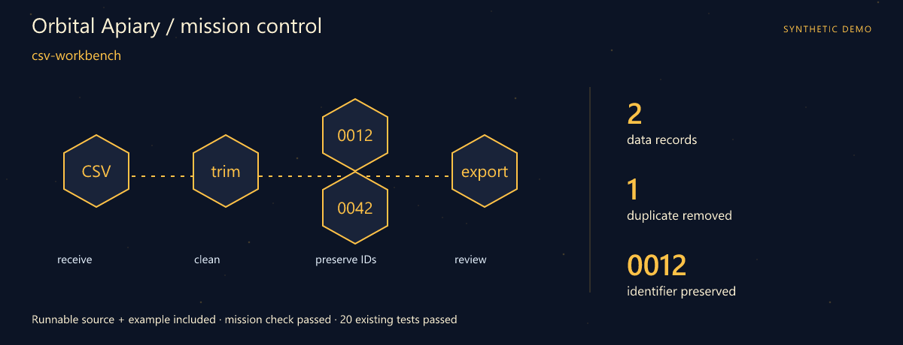
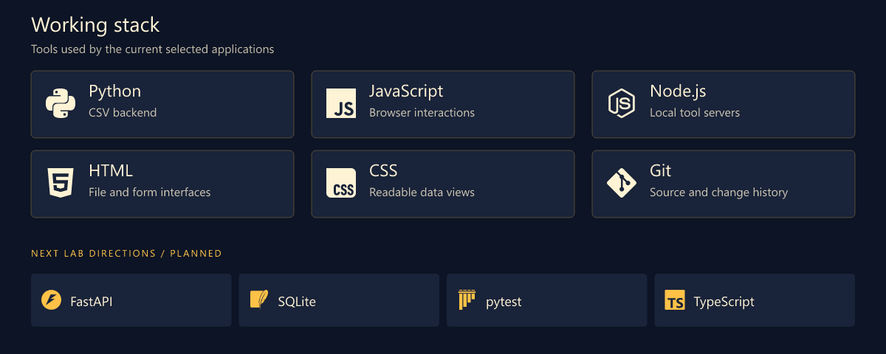
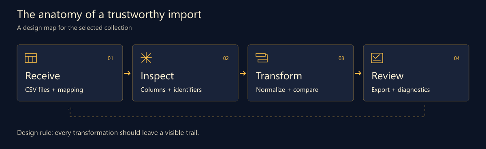
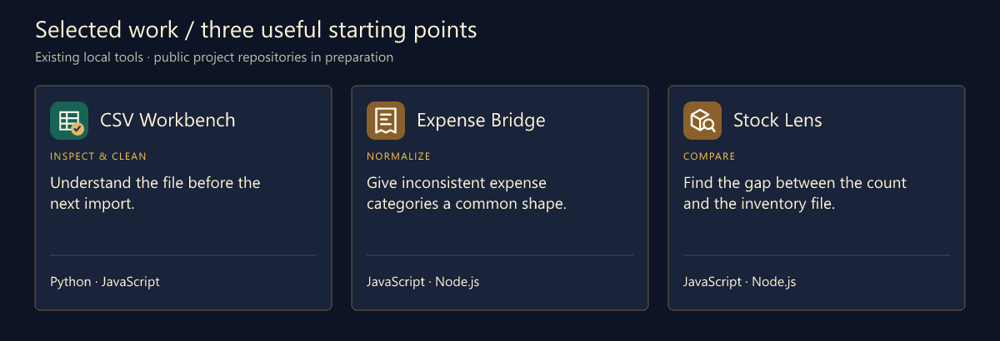
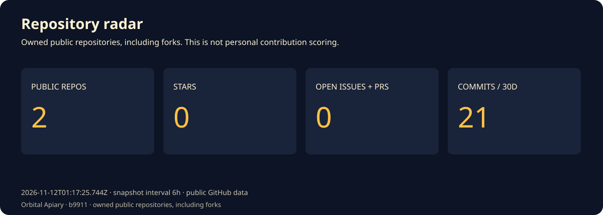
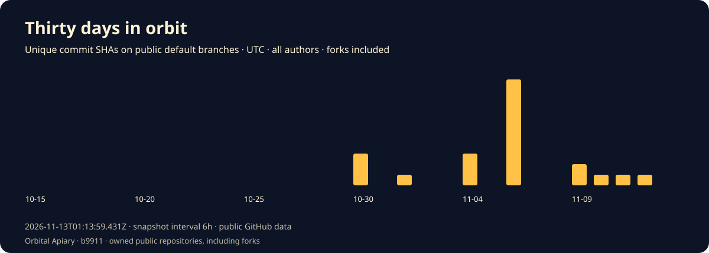
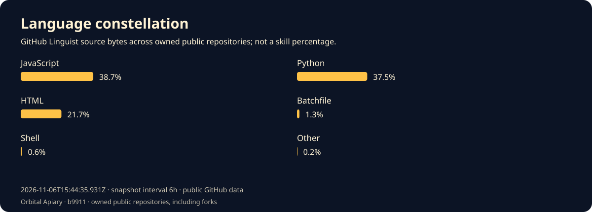
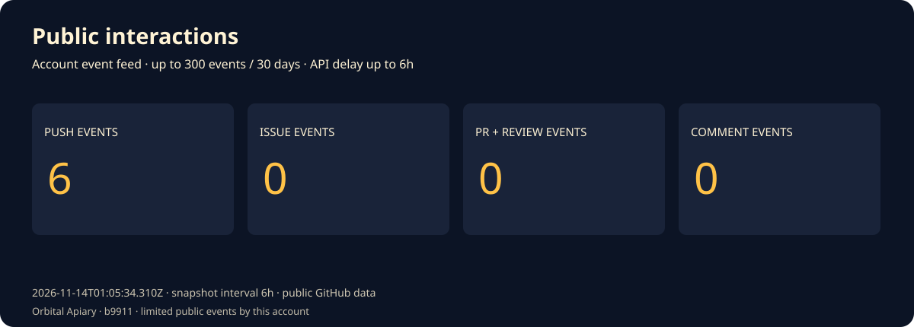

Boba · Python Developer · Data Tools
Orbital Apiary · A flight plan for messy data.
From a messy export to a result you can explain.
Download the runnable mission · Launch guide · Working stack · Selected work
Mission control

First launch: csv-workbench. A complete source snapshot, synthetic example and assertion script are included. The mission check and 20 existing tests passed. Try the mission · Snapshot and checked result.
I'm Boba. My corner of software is the space between receiving a file and trusting what comes out of it: parsing, cleanup, validation and the small interface that makes a transformation understandable.
A useful data tool should answer three questions quickly: what came in, what changed, and what needs another look. That is the thread connecting this collection.
What I focus on
- Data preparation. CSV structure, category mappings and the path from raw rows to an export.
- Validation that explains itself. Identifiers, duplicate records and mismatched quantities deserve visible context.
- Small interfaces for real files. A focused screen, a review step and an output that can be inspected again.
Working stack

The upper panel shows technologies used by the selected tools. The lower row is the next lab track.
How I think about the work

Selected work
Three existing local tools form this curated collection. Their public project repositories are being prepared.

| Project / stack | Why it belongs here | Input → output |
|---|---|---|
| CSV Workbench Python · JavaScript |
Understand the file before the next import. Inspect and clean CSV records, review a table and export the result with a report. | In: CSV text or a UTF-8 file Out: Cleaned CSV + JSON report |
| Expense Bridge JavaScript · Node.js |
Give inconsistent expense categories a common shape. Apply a category mapping to CSV expenses and inspect the normalized output. | In: Expense CSV + category map Out: Normalized expense records |
| Stock Lens JavaScript · Node.js |
Find the gap between the count and the inventory file. Compare recorded and counted quantities from two CSV inputs. | In: Recorded + counted stock Out: A stock comparison |
A small input with a big consequence
sku,quantity
0012,7
0013,0
The leading zeros belong to the identifier. This synthetic input is the kind of case the next validation pass should make easy to inspect.
Code and activity




These charts record one successful daily statistics snapshot after the workflow is enabled. Four attempts per day provide retries. Snapshot commits are labelled automated and authored by github-actions[bot], not personal coding contributions. The observation time is printed on every chart. Commits are unique default-branch SHAs across all authors and owned public repositories, including forks. Language bytes describe repositories, not personal skill. Public interactions are a limited event feed (up to 300 events / 30 days), not visitor analytics. API and image caches may delay updates.
Live data and scope · Portfolio website · Refresh setup
Next lab
- Explain the row. Point diagnostics back to the original row and field.
- Reuse the mapping. Save a reviewed category mapping with an example input.
- Make the next import easier. Explore a typed validation boundary and a small import history.
Start a conversation
Bring an awkward CSV example, a surprising identifier or an import rule that deserves a clearer explanation. Synthetic samples work well.
Open the profile repository's issues · Browse the repositories
🔎 One more CSV edge case.
Fictional developer persona · AI-illustrated avatar. Curated tools retain original authors, licenses and commit history. Technology icons: Simple Icons.